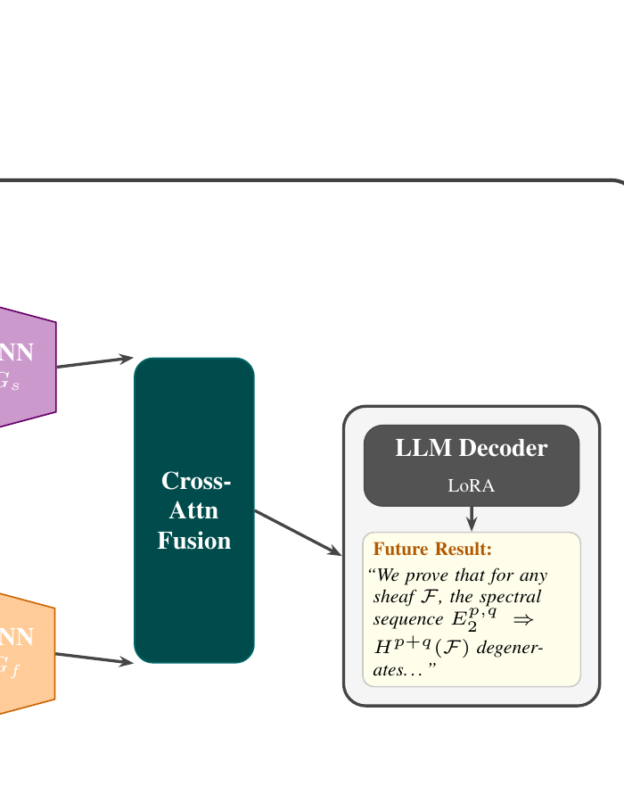

Both graph encoders share the same SimpleGNN message-passing architecture but differ in node
initialization. Enc1 uses E5-large-v2 abstract embeddings; enc2 uses DeepSeek-Math embeddings
of Lean theorem statements. After two GNN hops, node representations are projected via a Bridge
MLP into a shared 4224-dim latent space.
A single bidirectional cross-attention block then lets the scientific graph attend to the formal
graph and vice versa, producing fused representations that capture both dimensions simultaneously.
These fused representations are injected as cross-attention keys/values into 8 evenly-spaced layers
of DeepSeek-Math-7B, with only the cross-attention weights trained (10.7% of parameters).
Training follows a two-stage curriculum: (1) graph pretraining with contrastive link-prediction,
cross-graph alignment, and InfoNCE losses; (2) generation fine-tuning with a cross-entropy
generation loss and a margin loss that prevents the decoder from ignoring the graph context.

Decoder cross-attention. Fused graph node representations are projected to the
decoder hidden dimension and injected at layers 3, 7, 11, 15, 19, 23, 27, 31. Each generation
step attends over the full set of fused graph nodes.